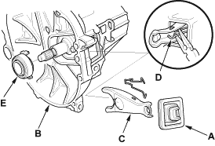
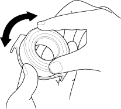
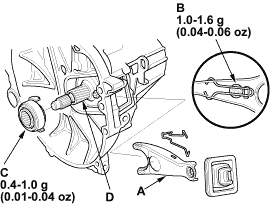
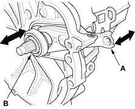

Release Bearing Replacement
- Remove the release fork boot (A) from the clutch housing (B).

- Remove the release fork (C) from the clutch housing (B) by squeezing the release fork set spring (D) with pliers. Remove the release bearing (E).
- Check the release bearing for play by spinning it by hand. If there is excessive play, replace the release bearing with a new one.
NOTE: The release bearing is packed with grease. Do not wash it in solvent.


- Apply Urea Grease UM264 (P/N 41211-PY5-305) to the release fork (A), the release fork bolt (B), the release bearing (C), and the release bearing guide (D) in the shaded areas.

- With the release fork slid between the release bearing pawls, install the release bearing on the mainshaft while inserting the release fork through the hole in the clutch housing.
- Align the detent of the release fork with the release fork bolt, then press the release fork over the release fork bolt squarely.
- Install the release fork boot (E), make sure the boot seals around the release fork and clutch housing.
- Move the release fork (A) right and left to make sure that it fits properly against the release bearing (B), and that the release bearing slides smoothly.
